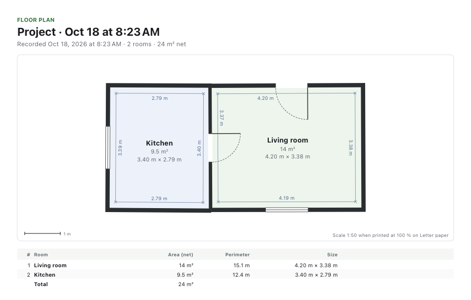
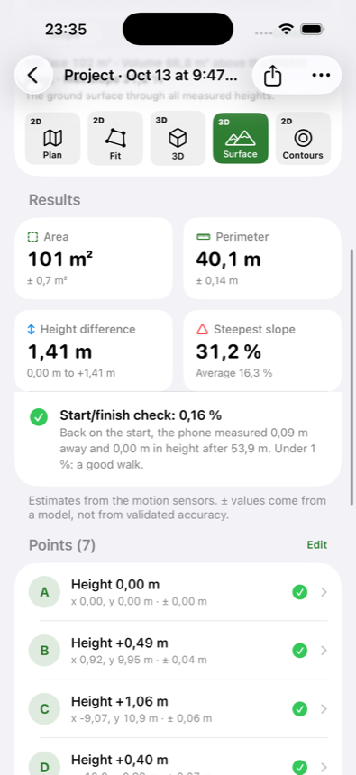
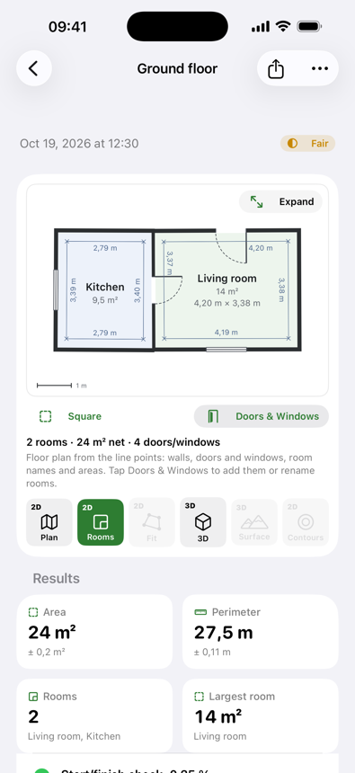
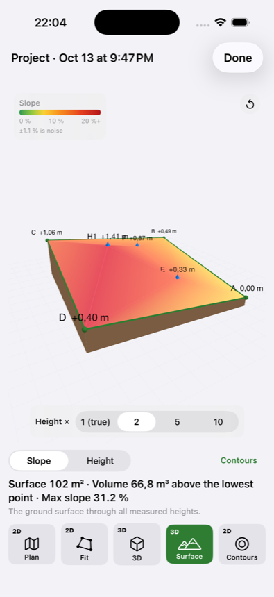
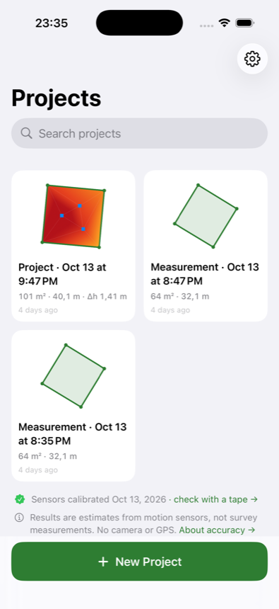

Măsori terenul cu iPhone-ul. Fără ruletă.
Pui telefonul jos la fiecare colț și afli suprafața, perimetrul și pantele în câteva minute.
- Fără cameră sau GPS
- Merge offline
- Datele rămân pe telefon
Pui telefonul jos. Simți vibrația. Mergi mai departe.


Tot ce îți trebuie, într-o singură tură
Pentru proprietari de teren, constructori, agenți imobiliari și grădinari.
Suprafață, perimetru, laturi
Fiecare cifră vine cu marja ei de eroare.
Pante și înălțimi
Hartă de pante, curbe de nivel și model 3D.
Planuri de locuință
Camere, uși și ferestre, cu telefonul lipit de fiecare perete.
Își verifică eroarea
Termini unde ai început și vezi cât de exactă a fost tura.
Merge cu selfie stick
Vibrația din mâner îți spune când să mergi mai departe.
PDF, CSV, DXF
Trimiți rezultatul clientului sau în AutoCAD, direct din telefon.
Planul casei, atingând pereții cu telefonul
Ții telefonul lipit de fiecare perete. Colțurile rezultă din intersecția pereților, chiar dacă sunt ascunse după mobilă.
- Mai multe camere, cu peretele dintre ele măsurat
- Uși, ferestre și goluri, dintr-un editor simplu
- PDF la scară, imagine sau DXF pentru AutoCAD

Clar, pas cu pas




Încearcă gratuit. Treci la Pro când ai nevoie.
Gratuit
0 lei
Un proiect, ca să vezi cum merge pe terenul tău.
- Un proiect de măsurare
- Suprafață, perimetru și laturi
- Calibrare și verificare start–final
- Selfie stick, vibrație și sunet
- Imaginea planului, cu marcajul WalkMeasure
WalkMeasure Pro
19,99 lei / lună
Anulezi oricând din setările contului Apple.
- Proiecte nelimitate
- Rapoarte PDF, CSV și DXF pentru AutoCAD
- Planuri de locuință: camere, uși, ferestre, la scară
- Înălțimi și teren: hartă de pante, curbe de nivel, 3D
- Imagini fără marcaj
Abonamentul se plătește prin App Store și se reînnoiește lunar. Proiectul gratuit se consumă când începi prima măsurătoare, chiar dacă îl ștergi apoi.
Bine de știut
Folosește camera, GPS-ul sau internetul?
Nu. Doar accelerometrul și giroscopul iPhone-ului. Măsurătorile merg offline, în casă, sub copaci și oriunde GPS-ul e slab. Internetul îți trebuie doar ca să cumperi abonamentul Pro.
Cât de precisă este?
Depinde de calibrare și de cât de des pui telefonul jos. Fiecare rezultat vine cu marja de eroare, iar revenirea la start o verifică. Pentru cote critice, verifică cu ruleta.
Pot folosi rezultatul pentru cadastru sau intabulare?
Nu. Pentru documente oficiale ai nevoie de un topograf autorizat. WalkMeasure îți spune rapid la ce să te aștepți.
Trebuie să calibrez telefonul?
O singură dată, la început: îl așezi pe o masă, pe fiecare dintre cele șase fețe, cam un minut în total. Aplicația te ghidează.
Unde ajung datele mele?
Rămân pe telefon. Fără cont, fără reclame, fără analiză de trafic. Le trimiți tu, ca PDF, CSV sau DXF, doar când vrei.
Ce telefon îmi trebuie?
Un iPhone cu iOS 17 sau mai nou.
Cât costă?
Aplicația e gratuită pentru un proiect. WalkMeasure Pro costă 19,99 lei pe lună, prin App Store, și îl anulezi oricând. Detalii la prețuri.
Altă întrebare? Scrie-ne la contact.kodgo@gmail.com.
Măsoară-ți terenul în câteva minute.
WalkMeasure ajunge în curând pe App Store. Îți scriem când apare.